This article showcases the range of flow diagrams that can be
produced by selecta, spanning from the major EQUATOR
reporting guidelines to more esoteric layouts. Each example displays the
complete pipeline code alongside the subsequent rendered output.
Diagrams cover both data operating modes (data-driven with built-in
datasets vs. manual with hand-entered counts), multiple arm
configurations (0-arm observational through 6-arm dose-finding),
converging multi-source layouts, split-and-recombine flows, and nested
factorial flows, as well as principal options for typographic and
numeric presentation. Both supported graphics rendering engines
(grid and Graphviz DOT) are represented. All figures are
rendered with flowchart() at default settings unless noted
otherwise.
For detailed usage guidance, see the package vignettes: Enrollment Diagrams (CONSORT, STROBE, STARD), Systematic Reviews (PRISMA, MOOSE), Split-and-Recombine Diagrams (screening validation, exposure classification), Graphviz Export (DOT/DiagrammeR), and Advanced Workflows.
n.b.: To ensure correct font rendering and figure sizing, the
grid-based diagrams below are displayed using a vignette-only helper function (queue_flow()) that applies recommended dimensions fromrecdims()via theragggraphics device, with the standard output function applied afterwards (flowchart()). In practice, replace thisqueue_flow()/flowchart()workflow with a call toflowsave()for equivalent printed results:Using
flowsave()ensures that the figure dimensions are always large enough to accommodate the diagram content, and it is the preferred method for saving flow diagram outputs inselecta.
library(selecta)
library(data.table)
data(selectaex0)
data(selectaex2)
data(selectaex3)
data(selectaex6)Single-Flow Diagrams
Single-flow diagrams have no arm splits or source convergence. The population enters at the top, passes through one or more exclusion steps, and exits at a single endpoint. This is the simplest topology and the building block for all others.
Example 1: Minimal Enrollment Flow, Manual
The simplest possible selecta pipeline: a starting
population and a terminal endpoint with no exclusions, arms, or
phases.
flowchart(flow1)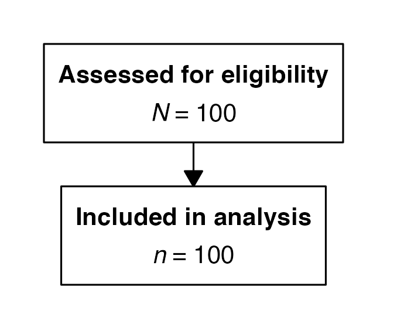
Example 2: Sequential Exclusions without Count Boxes, Manual
Four consecutive exclusion steps with
show_count = FALSE, stacking their side boxes alongside a
single uninterrupted main flow. This pattern is common in PRISMA-style
screening where multiple removal criteria are listed without
intermediate population counts.
flow2 <- enroll(n = 2000, label = "Records identified") |>
phase("Screening") |>
exclude("Duplicates", n = 300, show_count = FALSE) |>
exclude("Not in English", n = 50, show_count = FALSE) |>
exclude("Conference abstracts only", n = 80, show_count = FALSE) |>
exclude("No full text available", n = 20) |>
phase("Analysis") |>
endpoint("Studies included")
flowchart(flow2)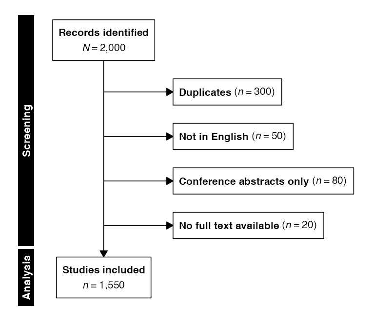
Example 3: Data-Driven Simple Selection Flow (STROBE), Count-First
A single-arm observational cohort built entirely from the
selectaex0 dataset. All counts are computed automatically
from exclusion expressions, and the sub-reasons for each exclusion are
tabulated from a column in the data. The count_first = TRUE
option places bold counts to the left of each label, a format common in
certain clinical journals.
flow3 <- enroll(selectaex0, id = "patient_id") |>
phase("Screening") |>
exclude("Duplicate records", criterion = is_duplicate == TRUE,
included_label = "Unique records") |>
exclude("Failed eligibility",
criterion = eligible == FALSE & is_duplicate == FALSE,
reasons = "exclusion_reason",
included_label = "Eligible cohort") |>
phase("Follow-up") |>
exclude("Lost to follow-up",
criterion = lost_to_followup == TRUE,
reasons = "followup_loss_reason") |>
phase("Analysis") |>
endpoint("Analysis cohort")
flowchart(flow3, count_first = TRUE)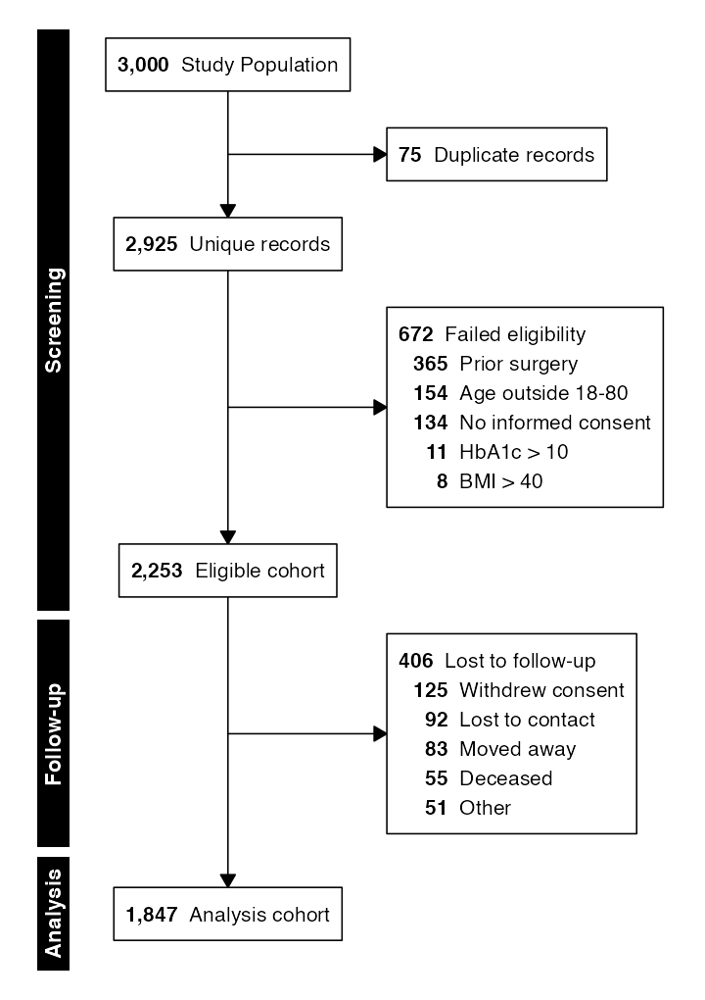
Example 4: Hierarchical Exclusion Reasons
When reasons is a named list, each element is a broad
category whose value is either a named vector of sub-reasons or a single
count. The side box lists each category as a parent with its sub-reasons
indented beneath:
flow4 <- enroll(n = 2000, label = "Patients assessed") |>
phase("Screening") |>
exclude("Excluded", n = 520,
reasons = list(
"Clinical ineligibility" = c(
"Out of age range" = 140,
"Contraindicated medication" = 110,
"Out-of-range biomarker" = 70),
"Consent not obtained" = c(
"Declined" = 130,
"Unable to consent" = 40),
"Logistical" = 30),
included_label = "Enrolled") |>
phase("Analysis") |>
endpoint("Analysis population")
flowchart(flow4)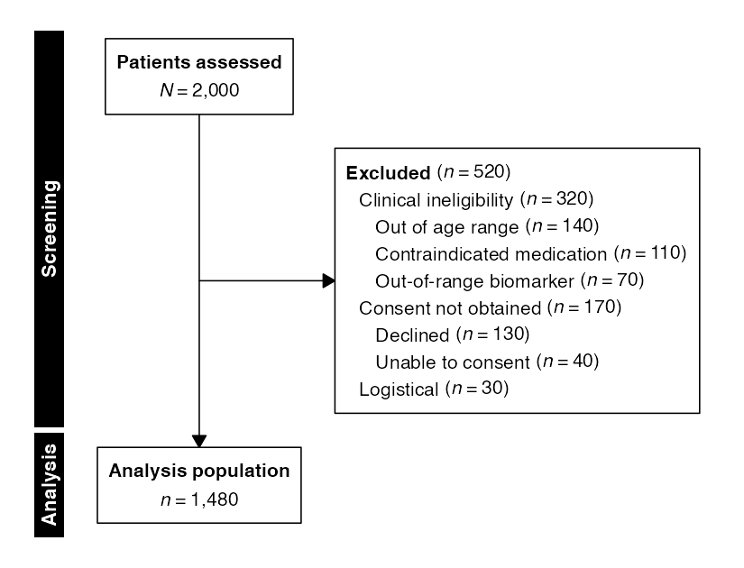
Parallel-Arm Diagrams (CONSORT / STROBE / STARD)
Parallel-arm diagrams use allocate() or
stratify() to split the flow into independent columns that
proceed to their own endpoints. This is the standard topology for
CONSORT randomized trials and STROBE observational studies with exposure
groups. Subsequent exclude() calls apply within each arm
independently. Diagnostic-accuracy (STARD) flows share this structure,
splitting on the index-test result with stratify().
Example 5: Data-Driven Two-Arm Randomization Flow (CONSORT)
A standard two-arm CONSORT diagram derived from the
selectaex2 dataset. The allocate() function
splits on the treatment column; subsequent
exclude() calls apply independently within each arm, with
discontinuation reasons tabulated automatically and ordered by global
totals across arms.
flow5 <- enroll(selectaex2, id = "patient_id") |>
phase("Screening") |>
exclude("Duplicate records", criterion = is_duplicate == TRUE,
included_label = "Unique records") |>
exclude("Failed eligibility", criterion = eligible == FALSE,
reasons = "exclusion_reason",
included_label = "Eligible cohort") |>
phase("Allocation") |>
allocate("treatment") |>
phase("Follow-up") |>
exclude("Discontinued", criterion = discontinued == TRUE,
reasons = "discontinuation_reason") |>
phase("Analysis") |>
endpoint("Analysis cohort")
flowchart(flow5)
Example 6: Manual Two-Arm CONSORT with Custom Styling
A manually specified CONSORT diagram demonstrating the full styling
parameter set. The included_label on the first exclusion
produces an explicit “Randomized” count box; per-arm discontinuation
reasons are supplied as a list of named vectors. The visual style
applies a coordinated blue palette across all six color parameters.
flow6 <- enroll(n = 1200, label = "Assessed for eligibility") |>
phase("Enrollment") |>
exclude("Excluded", n = 300,
reasons = c("Not meeting criteria" = 160,
"Declined to participate" = 90,
"Other reasons" = 50),
included_label = "Randomized") |>
phase("Allocation") |>
allocate(labels = c("Intervention", "Control"), n = c(450, 450)) |>
phase("Follow-up") |>
exclude("Lost to follow-up", n = c(18, 22),
reasons = list(
c("Withdrew consent" = 10, "Adverse event" = 8),
c("Withdrew consent" = 14, "Relocated" = 8)
)) |>
phase("Analysis") |>
endpoint("Analyzed")
flowchart(flow6,
cex = 1.0,
cex_side = 0.8,
cex_phase = 1.0,
box_fill = "#f0f5ff",
side_fill = "#e8eef9",
border_col = "#1a365d",
arrow_col = "#2c5282",
phase_fill = "#2c5282",
phase_text_col = "#ffffff")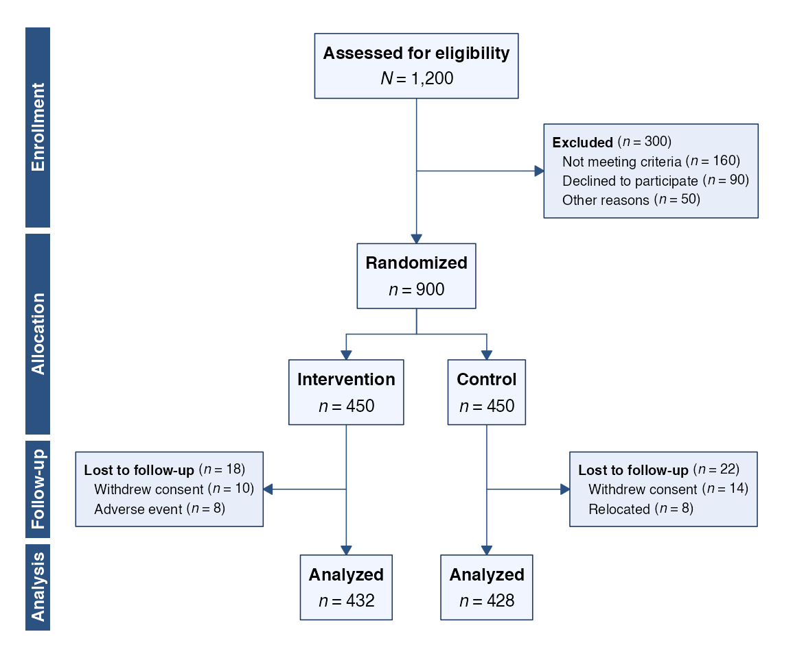
Example 7: Data-Driven Three-Arm Randomization Flow (CONSORT), Count-First
A three-arm trial layout from the selectaex3 dataset,
rendered in count-first mode. The layout engine uses uniform column
widths so that the split arrows fan out symmetrically regardless of
individual arm box widths. Per-arm side boxes are placed to the right of
each column.
flow7 <- enroll(selectaex3, id = "patient_id") |>
phase("Screening") |>
exclude("Duplicate records", criterion = is_duplicate == TRUE,
included_label = "Unique records") |>
exclude("Failed eligibility", criterion = eligible == FALSE,
reasons = "exclusion_reason",
included_label = "Eligible cohort") |>
phase("Allocation") |>
allocate("treatment") |>
phase("Follow-up") |>
exclude("Discontinued", criterion = discontinued == TRUE,
reasons = "discontinuation_reason") |>
phase("Analysis") |>
endpoint("Analysis cohort")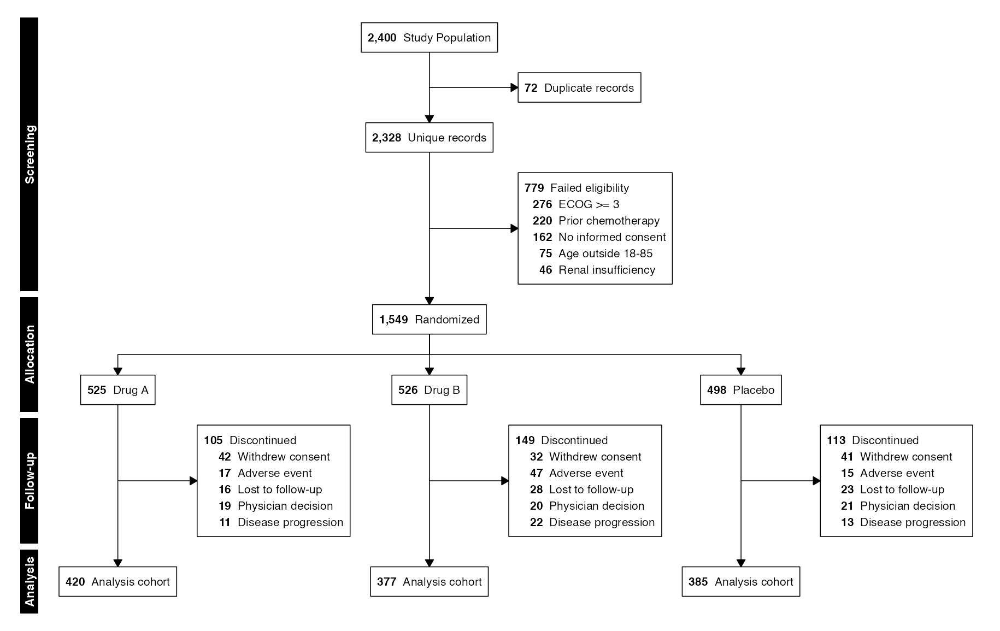
Example 8: STROBE Observational Study with Per-Arm Labels, Manual
A STROBE-style observational cohort study where the
exclude() function receives per-arm label vectors after
stratify(). The exposed and unexposed groups have distinct
attrition descriptions (“Treatment discontinued” vs. “Initiated
treatment”), and distinct included labels (“Continued treatment”
vs. “Remained unexposed”), reflecting the different clinical meanings of
loss in each group.
flow8 <- enroll(n = 5000, label = "Source population") |>
phase("Eligibility") |>
exclude("Did not meet inclusion criteria", n = 800,
reasons = c("Age outside range" = 340,
"Prior treatment" = 280,
"Comorbidity" = 180),
included_label = "Met inclusion criteria") |>
exclude("Declined to participate", n = 340) |>
phase("Baseline") |>
stratify(labels = c("Exposed", "Unexposed"), n = c(1900, 1960),
label = "Classified by exposure") |>
phase("Follow-up") |>
exclude(c("Treatment discontinued", "Initiated treatment"),
n = c(45, 52),
included_label = c("Continued treatment",
"Remained unexposed")) |>
exclude("Withdrew consent", n = c(12, 18)) |>
phase("Analysis") |>
endpoint("Included in analysis")
flowchart(flow8)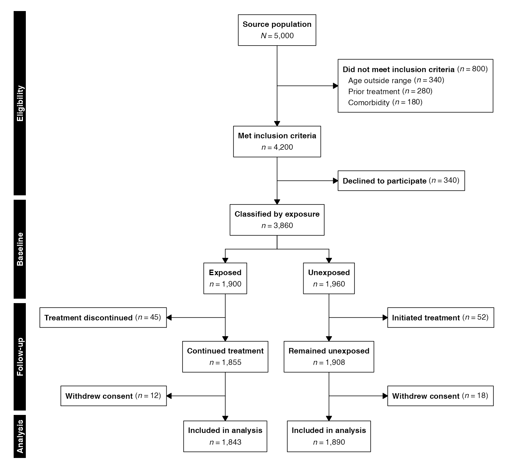
Example 9: Data-Driven Six-Arm Dose-Finding Flow (STROBE)
A six-arm dose-finding trial from the selectaex6
dataset, using stratify() rather than
allocate() since dose-finding studies are not always
randomized in the CONSORT sense.
flow9 <- enroll(selectaex6, id = "patient_id") |>
phase("Screening") |>
exclude("Duplicate records", criterion = is_duplicate == TRUE,
included_label = "Unique records") |>
exclude("Failed eligibility", criterion = eligible == FALSE,
reasons = "exclusion_reason",
included_label = "Eligible cohort") |>
phase("Allocation") |>
stratify("treatment") |>
phase("Follow-up") |>
exclude("Discontinued", criterion = discontinued == TRUE,
reasons = "discontinuation_reason") |>
phase("Analysis") |>
endpoint("Analysis cohort")
flowchart(flow9)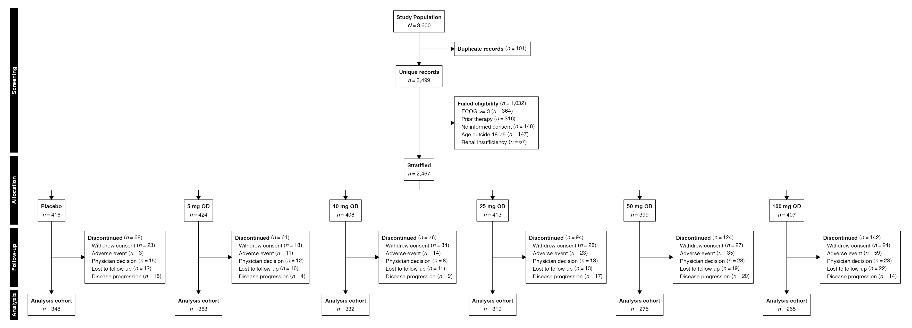
Example 10: Diagnostic Accuracy Study (STARD), Manual
A STARD-style diagnostic accuracy flow using assess() to
model test receipt and stratify() to split by index test
result. Per-arm endpoint breakdowns show the cross-classification of
target condition status within each test result category.
flow10 <- enroll(n = 500, label = "Potentially eligible patients") |>
phase("Enrollment") |>
exclude("Excluded", n = 40,
reasons = c("Refused" = 25, "Not meeting criteria" = 15)) |>
phase("Index") |>
assess("Index test", not_received = 22,
reasons = c("Refused" = 12, "Contraindicated" = 10)) |>
phase("Reference") |>
assess("Reference standard", not_received = 18,
reasons = c("Lost to follow-up" = 10, "Inconclusive" = 8)) |>
phase("Results") |>
stratify(labels = c("Index test positive", "Index test negative"),
n = c(180, 240),
label = "Index test result") |>
endpoint("Final diagnosis",
breakdown = list(c("Target condition +" = 160, "Target condition -" = 20),
c("Target condition +" = 15, "Target condition -" = 225)))
flowchart(flow10)
Example 11: Four-Arm Dose-Finding with Layered Exclusions
Parallel arms, an enrollment exclusion with a reason breakdown, a per-arm follow-up exclusion, and four phase bands combine in one dense figure. Uniform arm-column widths keep every split and convergence arrow symmetric regardless of label length:
flow11 <- enroll(n = 1600, label = "Screened") |>
phase("Eligibility") |>
exclude("Ineligible", n = 280,
reasons = c("Out of range" = 150,
"Comorbidity" = 90,
"Other" = 40),
included_label = "Randomized") |>
phase("Allocation") |>
allocate(labels = c("Placebo", "Low dose", "Mid dose", "High dose"),
n = c(330, 330, 330, 330)) |>
phase("Follow-up") |>
exclude("Discontinued", n = c(20, 18, 22, 25)) |>
phase("Analysis") |>
endpoint("Analyzed")
flowchart(flow11,
cex = 0.95,
cex_phase = 1.0,
box_fill = "#fff7ed",
side_fill = "#ffedd5",
border_col = "#7c2d12",
arrow_col = "#9a3412",
phase_fill = "#9a3412",
phase_text_col = "#ffffff")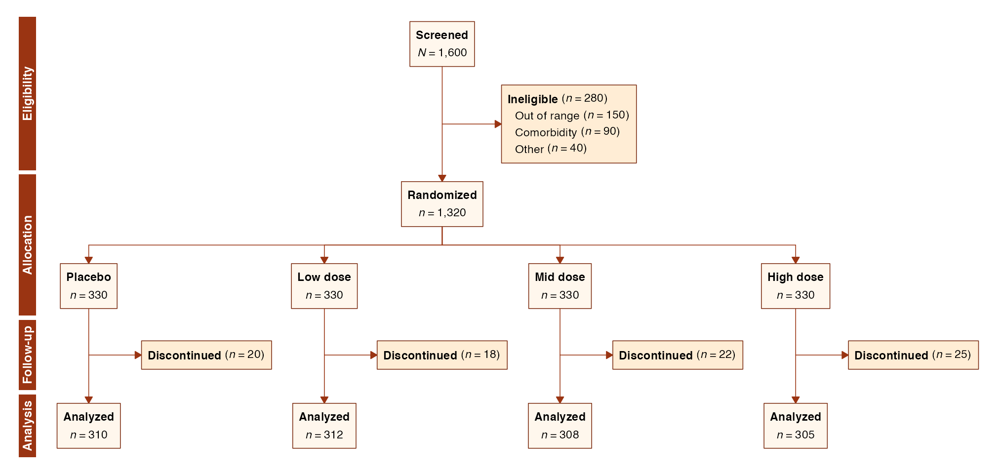
Example 12: Two-by-Two Factorial Trial
A factorial design chains two allocate() steps. The
second receives a single count vector enumerating the cells in
parent-major order. A subsequent exclude() takes one count
per cell, producing an outboard side box for each leaf arm:
flow12 <- enroll(n = 440, label = "Randomized") |>
phase("Allocation") |>
allocate(labels = c("Diet program", "Usual diet"), n = c(220, 220),
label = "Dietary assignment") |>
allocate(labels = c("Exercise", "No exercise"),
n = c(110, 110, 110, 110)) |>
phase("Follow-up") |>
exclude("Did not begin", n = c(6, 8, 5, 7)) |>
phase("Analysis") |>
endpoint("Analyzed")
flowchart(flow12)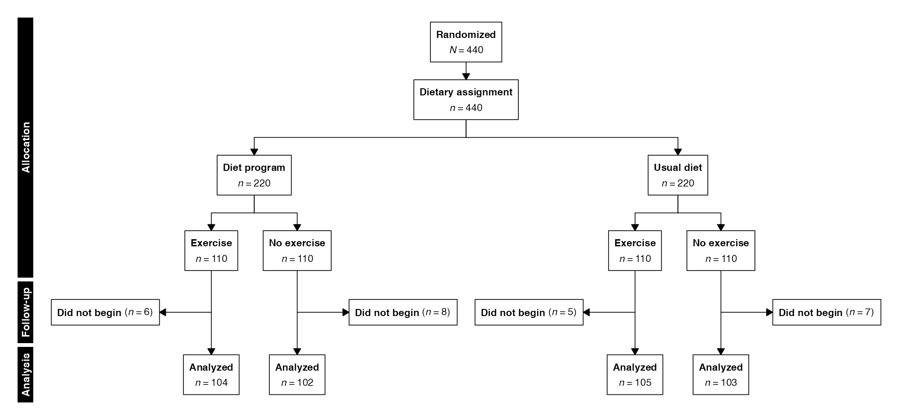
Example 13: Factorial with Recombination and Custom Palette
A factorial allocation may be pooled on its second factor with
combine(), returning the diagram to one stream per
first-factor arm. Combined with multi-phase banding and a coordinated
color palette, the result reports both the crossed allocation and the
pooled primary comparison in a single figure:
flow13 <- enroll(n = 720, label = "Randomized") |>
phase("Allocation") |>
allocate(labels = c("Immediate", "Deferred"), n = c(360, 360),
label = "Initiation timing") |>
allocate(labels = c("Monotherapy", "Combination"),
n = c(180, 180, 180, 180)) |>
phase("Follow-up") |>
exclude("Withdrew", n = c(10, 8, 12, 9)) |>
phase("Pooling") |>
combine("Pooled by timing") |>
phase("Analysis") |>
endpoint("Analyzed")
flowchart(flow13,
cex = 0.95,
cex_phase = 1.0,
box_fill = "#eef4ff",
side_fill = "#e3ecfb",
border_col = "#1a365d",
arrow_col = "#2c5282",
phase_fill = "#2c5282",
phase_text_col = "#ffffff")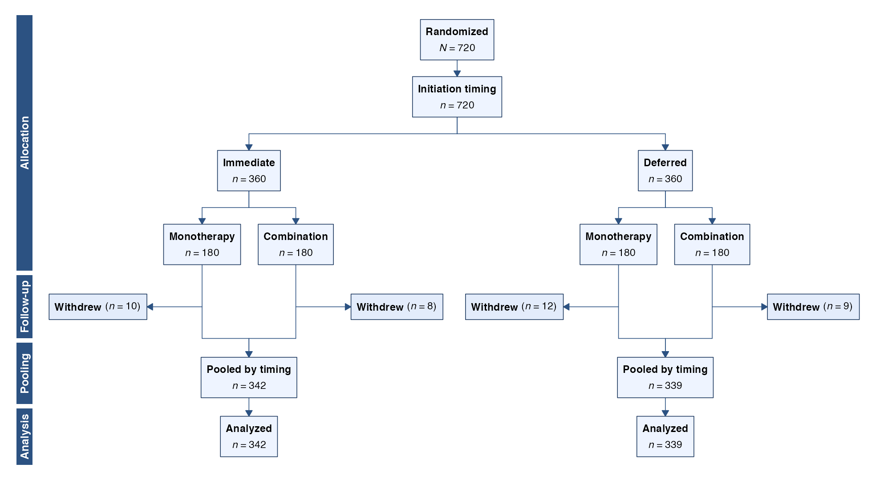
Systematic Reviews (PRISMA / MOOSE)
Systematic review diagrams begin with multiple parallel
identification streams created by sources(), which converge
via combine() into a single record pool. Subsequent
exclusion steps document the screening cascade. The
sources() function supports flat lists (single column),
grouped sources (multiple columns with headers), and up to three source
groups matching the PRISMA 2020 structure.
Example 14: Single-Column Systematic Review (PRISMA), Manual
A compact PRISMA flow using flat (ungrouped) sources()
to list all databases in a single column without headers. This is
suitable for smaller reviews where the three-column PRISMA 2020 layout
would be unnecessarily wide.
flow14 <- sources(PubMed = 1234, Embase = 567, CENTRAL = 89) |>
phase("Identification") |>
combine("Records identified") |>
exclude("Duplicates removed", n = 340,
included_label = "Records screened") |>
phase("Screening") |>
exclude("Records excluded", n = 800,
reasons = c("Irrelevant title/abstract" = 600,
"No full text available" = 200)) |>
phase("Analysis") |>
endpoint("Studies included in review")
flowchart(flow14)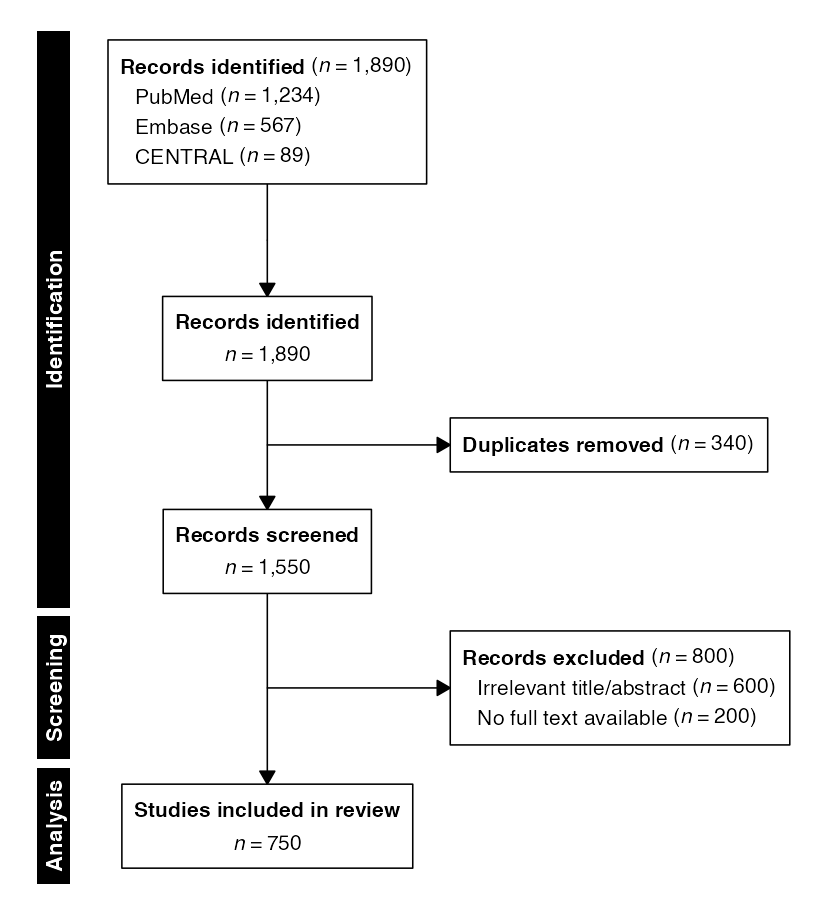
Example 15: Systematic Review (PRISMA 2020), Manual
A full PRISMA 2020 flow diagram with three source columns (previous
studies, databases and registers, and other methods). The
sources() function creates grouped parallel streams with
column headers; combine() merges them into a single record
pool. Multiple sequential exclude() calls with
show_count = FALSE stack their side boxes without
intermediate count nodes, matching the PRISMA convention of listing
removal reasons alongside a single screening flow.
flow15 <- sources(
previous = c("Previous review" = 12, "Previous reports" = 15),
databases = c("PubMed" = 1234, "Embase" = 567, "CENTRAL" = 89),
other = c("Citation search" = 55, "Websites" = 34),
headers = c(previous = "Previous studies",
databases = "Databases and registers",
other = "Other methods")) |>
phase("Identification") |>
combine("Records identified", n = 2006) |>
exclude("Records removed before screening", n = 352,
reasons = c("Duplicates" = 340,
"Marked ineligible by automation" = 12),
included_label = "Records screened") |>
phase("Screening") |>
exclude("Records excluded after title/abstract screening",
n = 1100, show_count = FALSE) |>
exclude("Reports not retrieved", n = 15, show_count = FALSE) |>
exclude("Reports excluded after full-text review", n = 45,
reasons = c("Wrong population" = 20,
"Wrong outcome" = 15,
"Wrong study design" = 10)) |>
phase("Analysis") |>
endpoint("Studies included in review")
flowchart(flow15)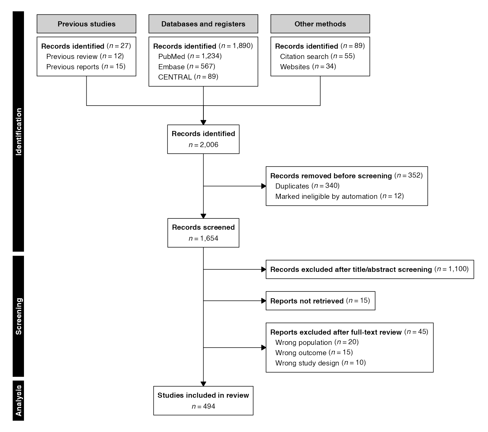
Example 16: Observational Meta-Analysis (MOOSE), Manual, Count-First
A MOOSE-style meta-analysis flow using two source columns (electronic databases and gray literature). Structurally similar to PRISMA but typically applied to observational studies. Rendered in count-first mode to illustrate the alternate label format across multi-source and single-flow sections.
flow16 <- sources(
databases = c("MEDLINE" = 2500, "Embase" = 1800, "PsycINFO" = 400),
gray = c("Dissertations" = 45, "Conference proceedings" = 120),
headers = c(databases = "Electronic databases",
gray = "Gray literature")) |>
phase("Identification") |>
combine("Total records") |>
exclude("Duplicates removed", n = 1200,
included_label = "Unique records") |>
phase("Screening") |>
exclude("Excluded on title/abstract", n = 2800, show_count = FALSE) |>
exclude("Excluded on full text", n = 150,
reasons = c("No control group" = 60,
"Insufficient data" = 50,
"Wrong population" = 40)) |>
phase("Analysis") |>
endpoint("Studies in meta-analysis")
flowchart(flow16, count_first = TRUE)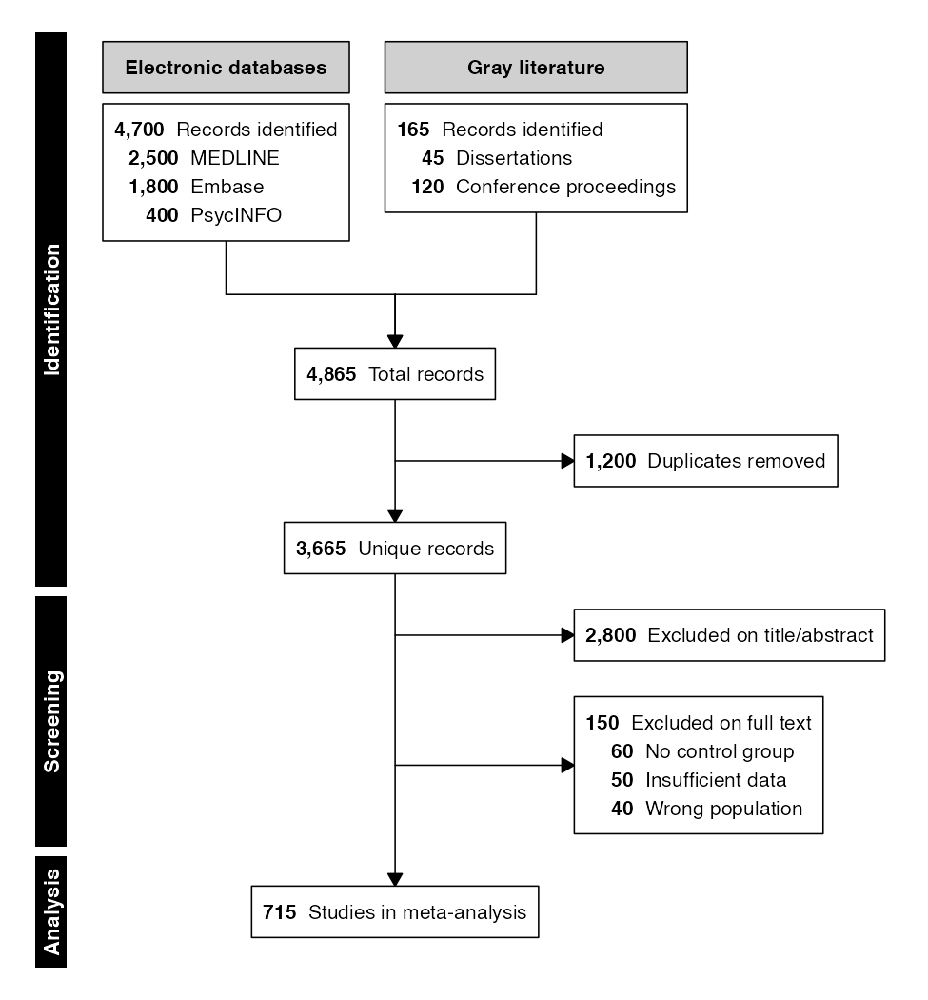
Split-and-Recombine Diagrams
Split-and-recombine diagrams use stratify() to divide a
population into strata that are characterized independently, then
combine() to merge the strata back into a single downstream
flow. This topology is distinct from both permanent allocation (CONSORT,
where arms proceed to separate endpoints) and top-level source
convergence (PRISMA, where streams merge at entry).
Example 17: Split-and-Recombine Screening Flow, Manual
A population is stratified by screening modality, characterized
independently within each stratum, and then recombined into a unified
downstream cohort for further analysis. The sublabel
parameter adds a descriptive line below the recombined box heading.
flow17 <- enroll(n = 160,
label = "High-risk participants") |>
phase("Enrollment") |>
exclude("Concurrent enrollment in another study", n = 2,
included_label = "Total cohort") |>
phase("Screening Status") |>
stratify(
labels = c("Unscreened", "Screened"),
n = c(82, 76),
label = "Annual screening status"
) |>
exclude("Without confirmed outcome", n = c(44, 66)) |>
combine("Outcome cohort",
sublabel = "Participants with confirmed outcome") |>
phase("Outcome Verification") |>
exclude("Without available adjudication", n = 7) |>
exclude("Without available imaging", n = 23) |>
endpoint("Participants with available imaging")
flowchart(flow17)
Example 18: Exposure Cohort with Recombination (STROBE), Count-First
An observational cohort is classified by statin exposure, per-stratum attrition is documented with sub-reasons, and the strata are recombined for the primary analysis. This demonstrates the split-and-recombine pattern in a pharmacoepidemiological context.
flow18 <- enroll(n = 5000, label = "Patients in registry") |>
phase("Enrollment") |>
exclude("Ineligible", n = 800,
reasons = c("Age < 18" = 200,
"Prior diagnosis" = 350,
"Missing baseline data" = 250),
included_label = "Eligible cohort") |>
phase("Exposure Classification") |>
stratify(
labels = c("Statin users", "Non-users"),
n = c(1800, 2400),
label = "Classified by statin exposure"
) |>
exclude("Lost to follow-up", n = c(120, 180),
reasons = list(
c("Moved" = 50, "Withdrew consent" = 40, "Deceased" = 30),
c("Moved" = 80, "Withdrew consent" = 60, "Deceased" = 40)
)) |>
combine("Analysis cohort",
sublabel = "Patients with complete follow-up") |>
phase("Analysis") |>
endpoint("Included in primary analysis")
flowchart(flow18, count_first = TRUE)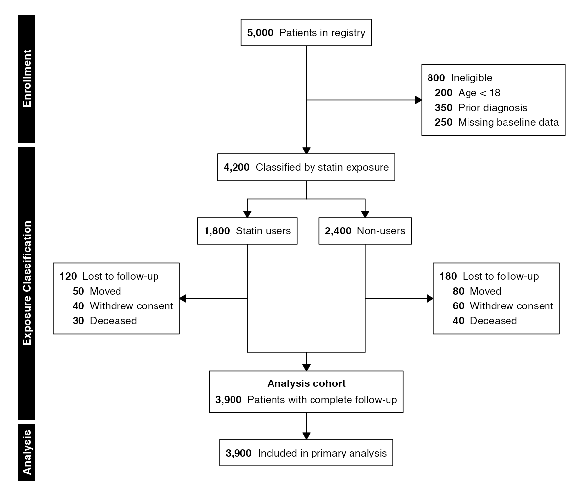
Example 19: Risk Stratification, Recombination, and Randomization
An adaptive design where patients are stratified by baseline risk,
recombined after characterization, and then randomized, demonstrating
re-splitting after a prior combine(). The layout engine
correctly scopes each split-combine span so that the converge arrows for
the first split do not interfere with the second split’s arm layout.
flow19 <- enroll(n = 2000, label = "Screened") |>
phase("Screening") |>
exclude("Ineligible", n = 400,
reasons = c("No consent" = 180, "Prior treatment" = 120,
"ECOG >= 3" = 100)) |>
phase("Risk Stratification") |>
stratify(
labels = c("High risk", "Low risk"),
n = c(700, 900),
label = "Risk classification"
) |>
exclude("Declined participation", n = c(50, 80)) |>
combine("Eligible cohort") |>
phase("Allocation") |>
allocate(labels = c("Intervention", "Control"),
n = c(735, 735)) |>
phase("Follow-up") |>
exclude("Lost to follow-up", n = c(30, 35),
reasons = list(
c("Withdrew consent" = 18, "Relocated" = 12),
c("Withdrew consent" = 20, "Relocated" = 15)
)) |>
phase("Analysis") |>
endpoint("Analyzed")
flowchart(flow19)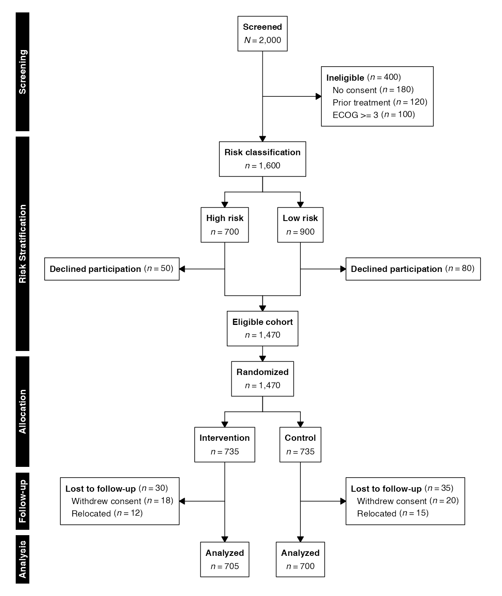
Hybrid Topologies
These diagrams combine multiple flow patterns in a single pipeline. For example, multi-site source convergence followed by randomization, or combinations that would not fit neatly into any single EQUATOR guideline.
Example 20: Multicenter Study with Randomization, Manual
A hybrid design combining multi-source entry with downstream
randomization. Three study sites are pooled via sources()
and combine(), screening failures are documented with
sub-reasons, and the remaining cohort is randomized into two arms with
per-arm discontinuation reasons supplied as a list of named vectors.
flow20 <- sources(
site_a = c("Site A" = 300),
site_b = c("Site B" = 250),
site_c = c("Site C" = 200),
headers = c(site_a = "Site A", site_b = "Site B", site_c = "Site C")) |>
phase("Enrollment") |>
combine("Pooled cohort") |>
exclude("Screening failures", n = 150,
reasons = c("Lab values" = 80, "EKG abnormal" = 40,
"Withdrew consent" = 30)) |>
phase("Allocation") |>
allocate(labels = c("Treatment", "Control"), n = c(300, 300)) |>
phase("Follow-up") |>
exclude("Discontinued", n = c(15, 12),
reasons = list(
c("Deceased" = 8, "Lost to follow-up" = 7),
c("Deceased" = 6, "Lost to follow-up" = 6)
)) |>
phase("Analysis") |>
endpoint("Primary analysis")
flowchart(flow20)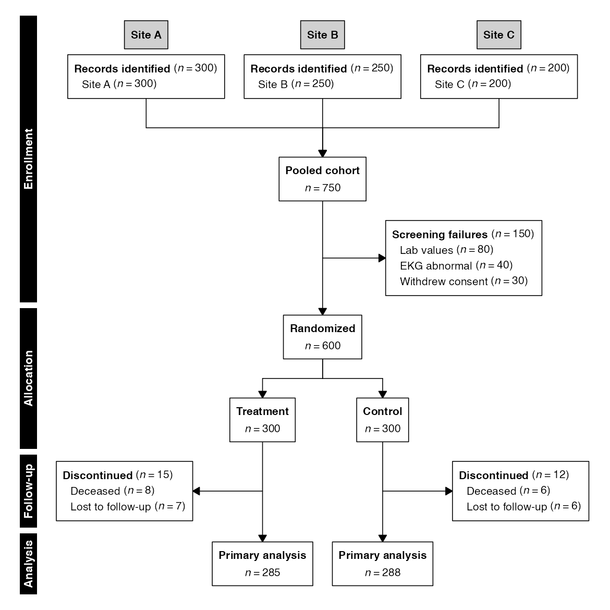
Typography and Number Formatting
The preceding examples use the default Helvetica typeface and United
States number formatting. The grid engine exposes both as
parameters of flowchart() (and, identically, of
flowsave()), allowing the diagram to match the typographic
and locale conventions of the surrounding document. Box dimensions are
recomputed from the metrics of the selected font, so the layout adapts
automatically; no manual resizing is required.
Example 21: Serif Typeface, Manual
A single-flow genomic biobank cohort rendered in a serif typeface via
font_family = "serif". Serif faces suit manuscripts typeset
in a serif body font, and the generic family name resolves to an
appropriate face on every platform. This example also illustrates
quality-control attrition, in which samples are removed for technical
rather than clinical reasons.
flow21 <- enroll(n = 8400, label = "Biobank participants") |>
phase("Eligibility") |>
exclude("Ineligible for analysis", n = 1560,
reasons = c("Insufficient sample volume" = 720,
"Missing consent records" = 540,
"Genotyping failure" = 300),
included_label = "Analyzable samples") |>
phase("Quality control") |>
exclude("Failed quality control", n = 340,
reasons = c("Call rate below threshold" = 190,
"Sex mismatch" = 90,
"Cryptic relatedness" = 60),
included_label = "Passed quality control") |>
phase("Analysis") |>
endpoint("Analytic cohort")
flowchart(flow21, font_family = "serif")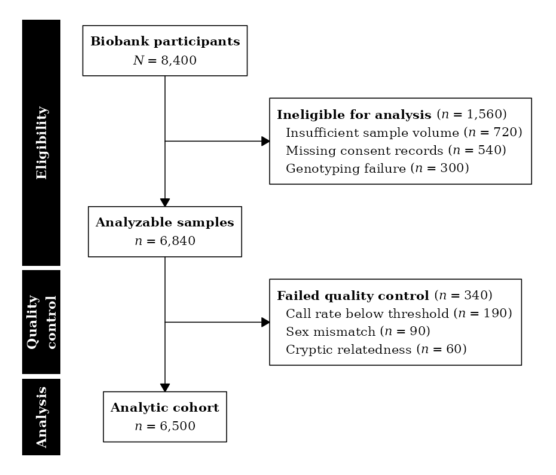
Example 22: Monospace Typeface, Manual
A two-arm pilot trial rendered in a monospace typeface via
font_family = "mono". Because every glyph in a monospace
font occupies the same width, digits align into clean vertical columns—a
property occasionally desired for technical reports or supplementary
materials. Any installed system font may be named in place of the
generic families.
flow22 <- enroll(n = 240, label = "Screened for pilot study") |>
phase("Enrollment") |>
exclude("Excluded", n = 48,
reasons = c("Declined to participate" = 28,
"Did not meet criteria" = 20),
included_label = "Enrolled") |>
phase("Allocation") |>
allocate(labels = c("App-based intervention", "Usual care"),
n = c(96, 96)) |>
phase("Analysis") |>
endpoint("Completed pilot")
flowchart(flow22, font_family = "mono")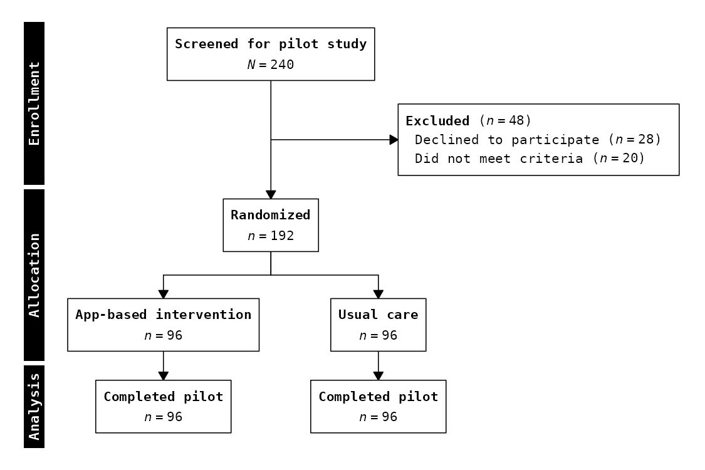
Example 23: Multi-Line Phase Labels, Manual
A three-arm environmental cohort whose phase labels carry full
descriptive sentences. Because phase labels wrap by default, each
rotated label is laid across several stacked lines so that a long
description occupies additional strip width rather than forcing the
diagram taller; the phase_max_lines argument bounds the
wrap depth, and phase_multiline = FALSE disables wrapping
entirely. A line break may alternatively be placed by hand with the
newline character "\n", which is honored irrespective of
this setting.
flow23 <- enroll(n = 5200, label = "Cohort members") |>
phase("Baseline enrollment and exposure assessment") |>
exclude("Excluded at baseline", n = 700,
reasons = c("Incomplete exposure history" = 360,
"Prevalent disease" = 220,
"Missing covariates" = 120),
included_label = "Eligible for follow-up") |>
phase("Stratification by exposure tertile") |>
stratify(labels = c("Low exposure", "Moderate exposure",
"High exposure"),
n = c(1500, 1500, 1500),
label = "Exposure tertile") |>
phase("Longitudinal outcome ascertainment") |>
exclude("Lost to follow-up", n = c(120, 140, 160)) |>
phase("Analysis") |>
endpoint("Analytic sample")
flowchart(flow23)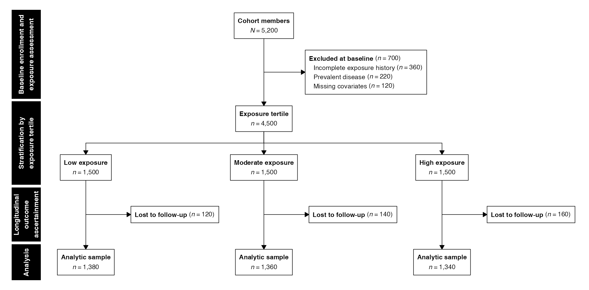
Example 24: European Number Formatting, Manual
A national screening program with counts in the hundreds of
thousands, formatted with the European preset via
number_format = "eu" (period thousands separator, comma
decimal). The preset accepts "us", "eu",
"space" (the SI/ISO thin space), and "none",
or a custom c(big.mark, decimal.mark) pair; a session-wide
default may be set through
options(selecta.number_format).
flow24 <- enroll(n = 1284500, label = "Invited to screening") |>
phase("Participation") |>
exclude("Did not attend", n = 458200,
included_label = "Attended screening") |>
exclude("Inadequate sample", n = 32600,
reasons = c("Sample insufficient" = 21400,
"Technical failure" = 11200),
included_label = "Valid result") |>
phase("Outcome") |>
endpoint("Entered surveillance")
flowchart(flow24, number_format = "eu")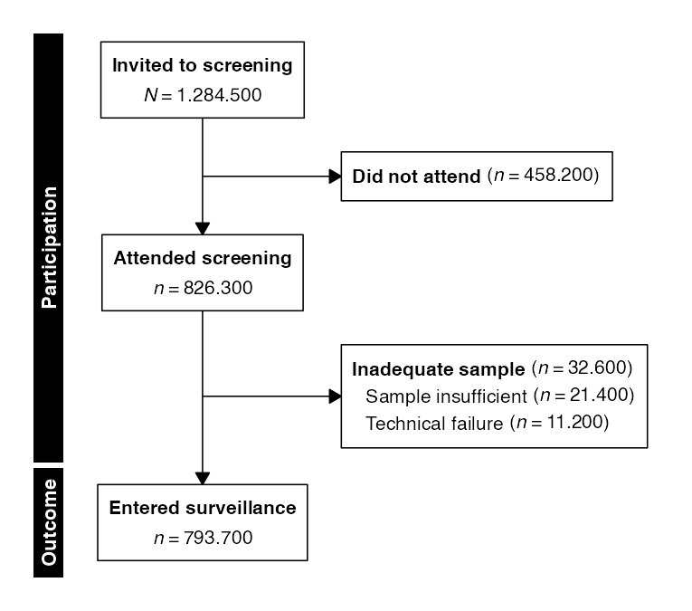
Graphviz / DOT Outputs
The DOT engine produces a Graphviz-language description of the
diagram, suitable for rendering through the system dot
binary, the DiagrammeR R package, or any other
Graphviz-compatible tool. The examples below use the same source
pipelines as elsewhere in the gallery but pass
engine = "dot" to flowchart() to obtain the
alternate layout. See the Graphviz
Export vignette for a full discussion of customization, fallback
behavior, and the orthogonal-edge option.
Example 25: Two-Arm CONSORT (DOT)
The default DOT output uses Graphviz’s orthogonal spline routing. Colors match the grid engine: main flow boxes are white, phase label boxes are black, and source column header boxes are gray.
flow25 <- enroll(n = 1200, label = "Assessed for eligibility") |>
phase("Enrollment") |>
exclude("Excluded", n = 300,
reasons = c("Not meeting criteria" = 160,
"Declined" = 90, "Other" = 50)) |>
phase("Allocation") |>
allocate(labels = c("Drug A", "Placebo"), n = c(450, 450)) |>
phase("Follow-up") |>
exclude("Lost to follow-up", n = c(20, 20)) |>
phase("Analysis") |>
endpoint("Analyzed")
dot25 <- flowchart(flow25, engine = "dot")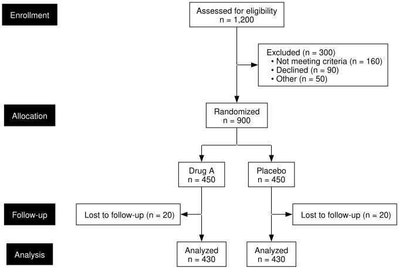
Example 26: Multi-Source PRISMA (DOT)
Converging multi-source diagrams can also be rendered via the DOT
engine. Each source column is laid out independently at the top of the
graph with its header centered above the column, and
combine() produces a fan-in to the identified cohort.
flow26 <- sources(
previous = c("Previous review" = 12, "Previous reports" = 15),
databases = c("PubMed" = 1234, "Embase" = 567, "CENTRAL" = 89),
other = c("Citation search" = 55, "Websites" = 34),
headers = c(previous = "Previous studies",
databases = "Databases and registers",
other = "Other methods")) |>
combine("Records identified", n = 2006) |>
exclude("Duplicates removed", n = 352,
included_label = "Records screened") |>
exclude("Records excluded", n = 1100) |>
endpoint("Studies included in review")
dot26 <- flowchart(flow26, engine = "dot", ortho = TRUE)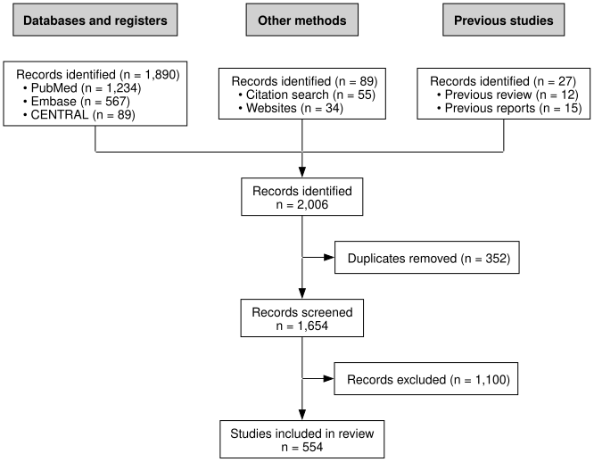
Example 27: Count-First CONSORT (DOT)
The count_first = TRUE option, familiar from the grid
engine, is also honored by the DOT engine. The count precedes the label
text on a single line, producing a compact layout. Counts render with
the locale-aware separator selected via number_format.
dot27 <- flowchart(flow25, engine = "dot", count_first = TRUE)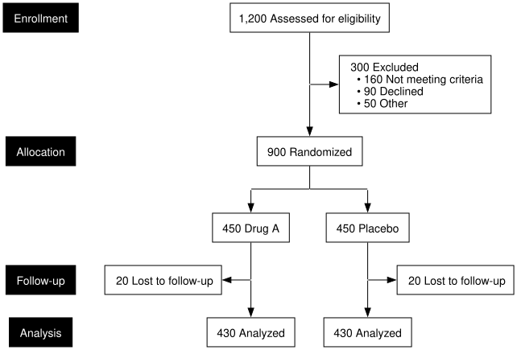
Example 28: Times Typography (DOT)
The DOT engine defaults to Helvetica, but accepts any
Graphviz-supported font via font_family. Times-Roman is
appropriate when Helvetica is unavailable, when serif typography fits
the surrounding document, or when consistency with PDF output matters
more than visual parity with the grid engine. Pair with
sans_serif = FALSE on render_dot() to retain
the Times typography rather than substituting it for the cross-platform
sans-serif chain:
dot28 <- flowchart(flow25, engine = "dot",
font_family = "Times-Roman")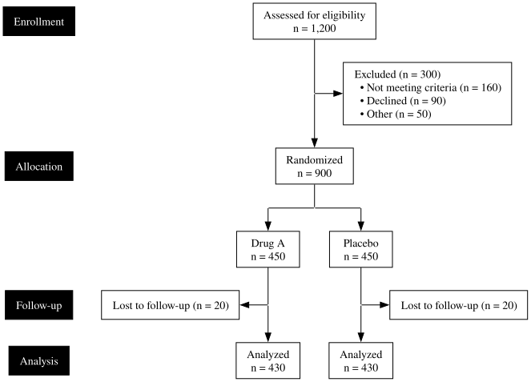
Example 29: Rich Formatting (DOT)
The DOT engine emits plain-text labels by default, which Graphviz
centers reliably across all fonts. For diagrams where inline italic
n and inline bold descriptive text matter — the typographic
conventions used by the grid engine and by published EQUATOR diagrams —
formatting = "rich" switches to HTML-like labels:
dot29 <- flowchart(flow25, engine = "dot", formatting = "rich")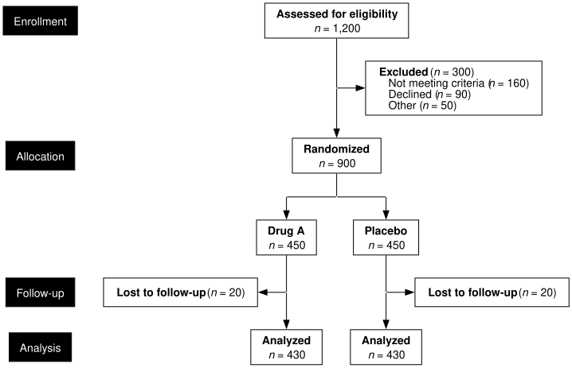
Rich formatting uses Graphviz’s HTML-label code path, which has slight text-width estimation drift for bold strings. The DOT engine compensates with embedded Adobe Font Metric tables and a trailing-whitespace centering correction for Helvetica and Times, producing sub-pixel-accurate centering. The plain default (Examples 25-28) is recommended for prototyping and web embedding; the rich variant (this example) is recommended when inline typographic emphasis is essential. See the Graphviz Export vignette for further discussion.
Example 30: Two-by-Two Factorial Trial (DOT)
The DOT engine renders the factorial layout with the same nesting, displaying each parent over its sub-arm pair and splaying the per-cell exclusion boxes outward. The flow object from the grid factorial above is reused unchanged:
dot30 <- flowchart(flow12, engine = "dot")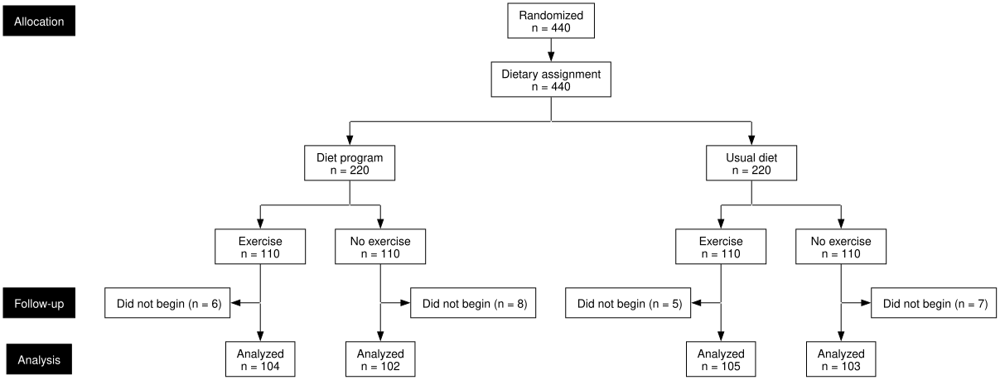
Example 31: Hierarchical Exclusion Reasons (DOT)
The DOT engine renders the two-level reason breakdown with bulleted parents and en-dashed sub-reasons inside the exclusion node.
dot31 <- flowchart(flow4, engine = "dot")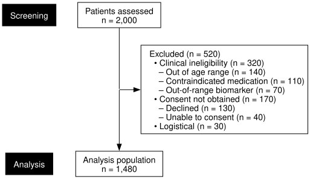
If bullets are not desired, setting bullets = FALSE
removes the markers in favor of indentation alone.
Example 32: Multi-Source PRISMA with Nested Reasons (DOT)
Top-level source convergence, a multi-stage screening cascade, a hierarchical full-text exclusion breakdown, and orthogonal edge routing combine in one diagram. The DOT engine resolves the source columns, the nested reason box, and the right-angle channel together:
flow_src_nested <- sources(
databases = c("PubMed" = 1620, "Embase" = 940, "Scopus" = 510),
other = c("Citation chasing" = 70, "Trial registries" = 35),
headers = c(databases = "Databases", other = "Other sources")) |>
phase("Identification") |>
combine("Records identified") |>
exclude("Duplicates removed", n = 540,
included_label = "Records screened") |>
phase("Screening") |>
exclude("Excluded by title and abstract", n = 2110,
included_label = "Reports assessed") |>
phase("Eligibility") |>
exclude("Reports excluded", n = 380,
reasons = list(
"Ineligible design" = c("Case report" = 90,
"Review" = 70,
"Editorial" = 25),
"Out of scope" = c("Wrong population" = 80,
"Wrong outcome" = 55),
"No usable data" = 60)) |>
phase("Included") |>
endpoint("Studies in synthesis")
dot32 <- flowchart(flow_src_nested, engine = "dot", ortho = TRUE)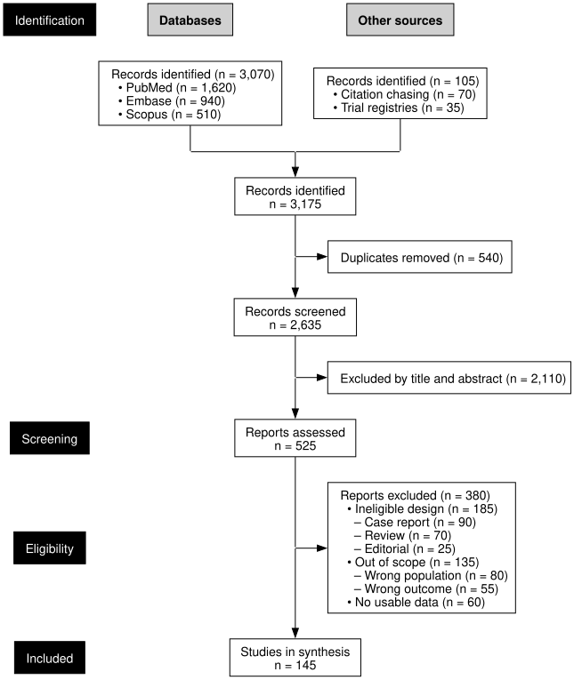
Example 33: Factorial with Orthogonal Times Typography (DOT)
A factorial layout under the DOT engine, combining orthogonal
routing, the count-first label format, and Times-Roman typography.
Rendering with sans_serif = FALSE retains the serif face
rather than substituting the cross-platform sans-serif chain:
flow_fac_ortho <- enroll(n = 800, label = "Randomized") |>
phase("Allocation") |>
allocate(labels = c("Arm A", "Arm B"), n = c(400, 400),
label = "Primary factor") |>
allocate(labels = c("Adjunct", "Standard"),
n = c(200, 200, 200, 200)) |>
phase("Follow-up") |>
exclude("No treatment", n = c(6, 9, 7, 8)) |>
phase("Analysis") |>
endpoint("Analyzed")
dot33 <- flowchart(flow_fac_ortho, engine = "dot", ortho = TRUE,
count_first = TRUE, font_family = "Times-Roman")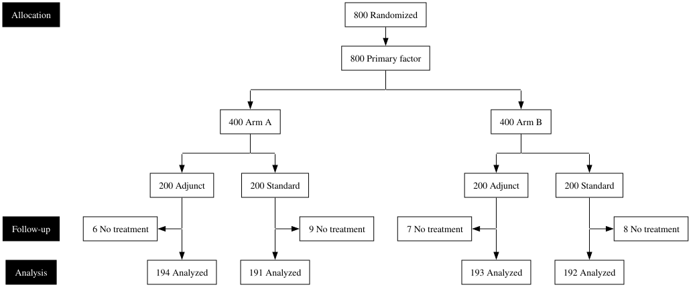
Further Reading
- Enrollment Diagrams: CONSORT, STROBE, and STARD diagrams with permanent parallel arms
- Systematic Reviews: PRISMA and MOOSE diagrams with top-level source convergence
- Split-and-Recombine Diagrams: Hybrid topologies for screening validation and exposure classification
- Advanced Workflows: Factorial (nested-split) designs and hierarchical exclusion reasons
- Graphviz Export: DOT output for Graphviz/DiagrammeR rendering